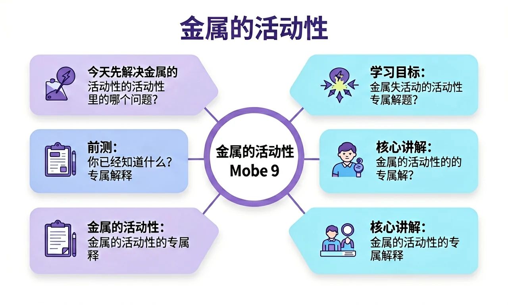
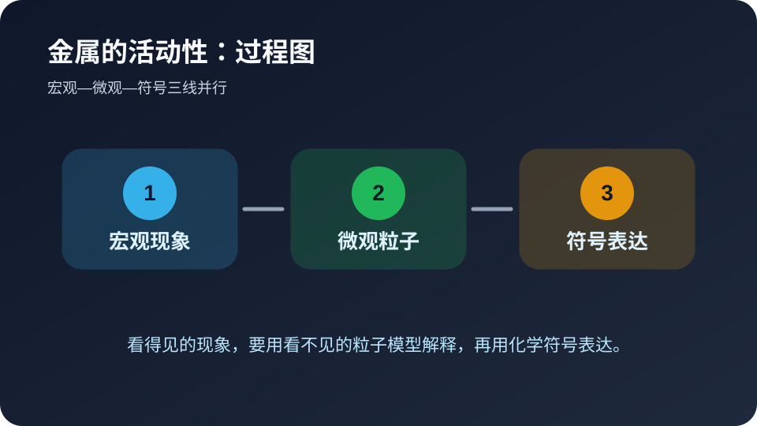
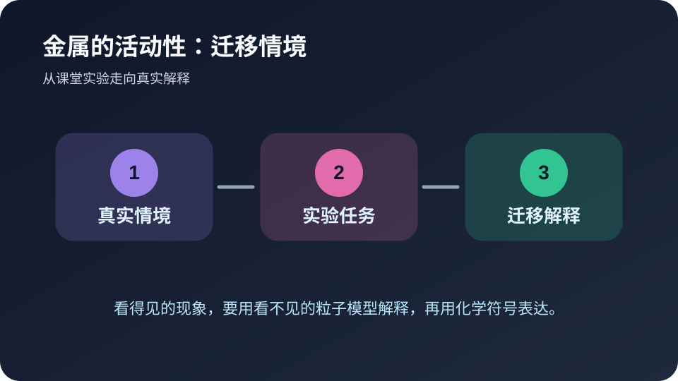

今天先解决金属的活动性里的哪个问题？
选择后，AI 学伴会围绕你的卡点给提示。
🎯 学习目标
- 能用自己的话解释金属的活动性的核心含义
- 能把金属的活动性和实验现象、微观粒子或化学符号联系起来
- 能识别金属的活动性相关的常见错误并完成迁移题
📝 前测：你已经知道什么？
下面哪种学习方式最符合化学学科特点？
🔍 核心讲解：金属的活动性 的专属解释
镁能与稀盐酸剧烈反应，铜几乎不与稀盐酸反应。
金属活动性反映金属失电子能力强弱，可用与酸反应或置换反应比较。
证据来自气泡快慢、置换实验和金属活动性顺序表。
深层理解：看见它是具体实验现象；拆开它要看 金属种类、酸浓度、盐溶液种类和表面氧化膜；解释它要说明为什么；比较它要避开易错点；迁移它要换到新情境。
📘 核心概念模块：先把金属的活动性说清楚
金属活动性反映金属失电子能力强弱，可用与酸反应或置换反应比较。
这个模块只属于金属的活动性，因为它的关键证据是：证据来自气泡快慢、置换实验和金属活动性顺序表。 本课把学习任务拆成三步：识别现象、说明机制、用符号或数据完成解释。
🧩 过程图：从现象到解释

看见现象只是第一步。真正的化学解释，需要把“颜色、气体、沉淀、温度”等宏观线索，转译成“粒子种类、粒子数目、粒子间作用或重新组合”等微观语言，最后再落到符号表达。
🧪 例题示范模块：用金属的活动性解释一道题
情境：铁能把铜从硫酸铜溶液中置换出来，说明铁比铜活泼。
作答路径：先写现象，再写与金属的活动性相关的机制，最后写证据或条件。不要只写结论，要写出“因为……所以……”的推理链。
🎯 ConcepTest 检查点：暴露一个常见误区
判断题：只要能说出金属的活动性的名称，就说明已经理解这个知识点。这个说法对吗？请先独立判断，再说明理由。正确思路是：名称只是入口，理解必须能解释现象、区分相近概念，并在新情境中迁移。
错因诊断：很多同学把“背过”误认为“会用”。遇到综合题时，一旦题目换成实验装置、生活材料或数据图表，就容易失分。解决办法是每学一个概念，都配一个现象、一个微观解释和一个符号表达。
🚀 迁移任务模块：自己设计一个解释

请用金属的活动性解释一个生活或实验情境，写出现象、微观/符号解释和条件变化后的结果。
🌐 外部仿真：PhET 物质状态
先自由探索，再回到本课互动区完成诊断任务。
🎛️ Canvas 真实互动：微观解释模拟器
拖动滑块，观察 金属种类、酸浓度、盐溶液种类和表面氧化膜 如何影响结果。
🎬 微课讲解
这段微课讲解用于提示：化学学习要把可见现象和不可见粒子模型对应起来。
⚠️ 常见错误与错因诊断
把反应快慢只归因于金属多少，忽略金属种类和条件。
只看表面现象，没写 金属种类、酸浓度、盐溶液种类和表面氧化膜 中的关键条件。
现象要具体，机制要对应，证据要能检验。
✅ 后测：学会了吗？
⭐ 基础巩固：金属的活动性最重要的学习路径是什么？
⭐⭐ 能力应用：请用生活或实验场景解释金属的活动性。
⭐⭐⭐ 迁移挑战：设计一个小实验或判断题，验证你是否真正理解。
🧭 诊断实验室：判断解释是否合格
请用三条标准评价自己的答案：第一，是否说清了观察到的现象，而不是只写结论；第二，是否把现象背后的微观粒子、物质类别或反应规律讲出来；第三，是否能用符号、关键词或简图表达。若三条里少任何一条，说明对金属的活动性的理解还不够稳。
教师可以让学生两两互评：一人读解释，另一人只问“你看到的证据是什么”“微观层面发生了什么”“如果换个条件还成立吗”。这三个追问能快速暴露死记硬背的问题，也能把课堂讨论从答案对错推进到证据和推理。
📌 本课小结：把金属的活动性装进长期记忆
今天的关键不是记住一段固定话术，而是能用金属的活动性解释具体证据。遇到新题时，先找现象，再找 金属种类、酸浓度、盐溶液种类和表面氧化膜，最后写出机制与证据。
课后任务：把本课的情境换成你熟悉的生活或实验材料，再写一道带错因诊断的选择题。
🧭 教师追问：把 金属的活动性 推到证据层
如果学生只写出金属的活动性的名称，继续追问三句：题目中哪个现象最能说明问题？这个现象对应的粒子、物质类别或符号表达是什么？如果改变反应条件、物质用量或实验装置，结果会怎样变化？这三问能把答案从背诵推进到证据推理。
课堂上可以让学生把自己的解释标成三种颜色：蓝色写宏观现象，绿色写微观或符号机制，黄色写证据或变量。缺少任何一种颜色，就说明解释还不完整。
🧪 小实验设计：让 金属的活动性 可被检验
请设计一个最小实验或判断题来检验金属的活动性。要求写清：要比较的两组条件、要观察的现象、预期结果、可能的干扰因素。真正合格的实验设计，不是把教材句子换个说法，而是让别人能按你的步骤得到证据。